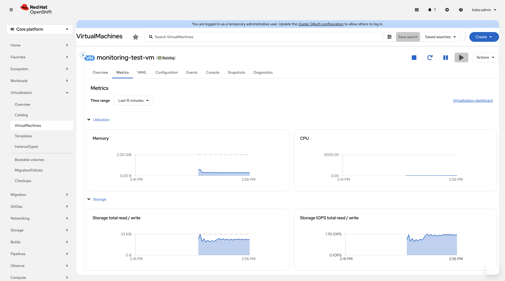
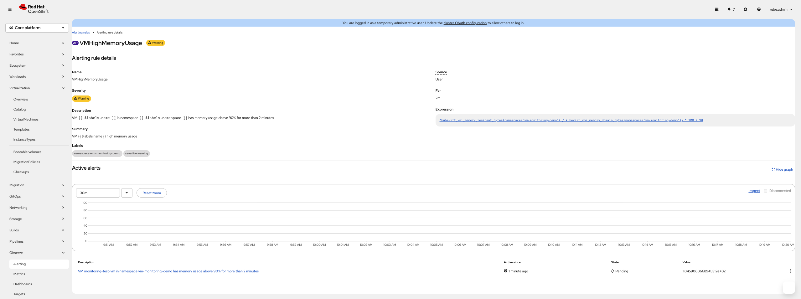

VM Monitoring and Metrics
Overview
This tutorial demonstrates how to monitor virtual machine performance and health using OpenShift’s built-in Prometheus and Grafana monitoring stack. You will learn to access VM metrics through the web console, query Prometheus directly for custom analysis, build Grafana dashboards, and set up alerts for proactive issue detection.
VM monitoring enables performance optimization, capacity planning, SLA compliance tracking, and early detection of resource constraints. The tutorial covers both hypervisor-level metrics (available immediately) and guest OS metrics (via QEMU guest agent installation).
Prerequisites
-
OpenShift 4.18+ with OpenShift Virtualization operator installed and tested on 4.21
-
Cluster monitoring enabled (default in OpenShift)
-
Running VM from a previous tutorial or existing workload
-
Web console access to the OpenShift cluster
-
ocCLI installed and authenticated -
virtctlCLI installed for VM console access
Understanding VM Metrics
OpenShift Virtualization exposes metrics through two primary sources that complement each other for comprehensive monitoring.
Hypervisor-Level Metrics
These metrics are collected from the host system and KubeVirt components without requiring any guest OS configuration:
-
CPU metrics: vCPU usage percentage, CPU time in nanoseconds
-
Memory metrics: memory usage in bytes, memory requests and limits
-
Network metrics: bytes sent/received per network interface, packet counts
-
Storage metrics: disk read/write operations, I/O bytes per volume
-
Lifecycle metrics: VM state transitions, uptime, migration events
Guest OS Metrics
These additional metrics require the QEMU guest agent running inside the VM:
-
Guest memory pressure: swap usage, memory pressure indicators
-
Guest disk utilization: filesystem usage per mount point
-
Guest network details: detailed interface statistics including errors and drops
-
Guest system information: OS version, kernel version, system load
Step 1: Create a Test VM for Monitoring
Create a simple VM to demonstrate monitoring capabilities:
oc create namespace vm-monitoring-demooc apply -f - <<EOF
apiVersion: kubevirt.io/v1
kind: VirtualMachine
metadata:
name: monitoring-test-vm
namespace: vm-monitoring-demo
labels:
app: monitoring-demo
spec:
runStrategy: Always
template:
metadata:
labels:
kubevirt.io/domain: monitoring-test-vm
spec:
domain:
cpu:
cores: 2
memory:
guest: 2Gi
devices:
disks:
- name: rootdisk
disk:
bus: virtio
- name: cloudinitdisk
disk:
bus: virtio
interfaces:
- name: default
masquerade: {}
networks:
- name: default
pod: {}
volumes:
- name: rootdisk
containerDisk:
image: quay.io/containerdisks/fedora:latest
- name: cloudinitdisk
cloudInitNoCloud:
userData: |
#cloud-config
password: redhat
chpasswd:
expire: false
packages:
- qemu-guest-agent
runcmd:
- systemctl enable --now qemu-guest-agent
EOFWait for the VM to reach Running state:
oc get vm monitoring-test-vm -n vm-monitoring-demo -wExpected output:
NAME AGE STATUS READY monitoring-test-vm 30s Running True
Press Ctrl+C to stop watching once the VM shows Running and True.
Step 2: Access VM Metrics via Web Console
Navigate to the VM in the OpenShift web console to view built-in monitoring capabilities.
Basic VM Metrics View
-
Open the OpenShift web console
-
Navigate to Virtualization > VirtualMachines
-
Click on the
monitoring-test-vm -
Select the Metrics tab
The Metrics tab displays four key charts:
-
CPU usage: Shows vCPU utilization percentage over time
-
Memory usage: Displays memory consumption in GB
-
Network In/Out: Network traffic in MB/s for all interfaces
-
Storage In/Out: Storage I/O in MB/s for all disks

| Metrics collection begins immediately when a VM starts. If charts appear empty, wait 2-3 minutes for data collection to populate the graphs. |
Step 3: Query VM Metrics with Prometheus
Access the OpenShift monitoring stack directly for advanced metrics analysis and custom queries.
Access the Prometheus Console
-
In the web console, navigate to Observe > Metrics
-
This opens the Prometheus query interface integrated into OpenShift
Common VM Metric Queries
Execute these Prometheus queries to understand VM metrics:
CPU utilization by VM:
rate(kubevirt_vmi_vcpu_seconds_total[5m]) * 100Memory usage by VM:
kubevirt_vmi_memory_resident_bytes / 1024 / 1024 / 1024Network bytes received per VM:
rate(kubevirt_vmi_network_receive_bytes_total[5m])Storage read operations per VM:
rate(kubevirt_vmi_storage_read_traffic_bytes_total[5m])VM phase counts across cluster (node-level aggregate):
kubevirt_vmi_phase_countPer-VM phase status:
kubevirt_vmi_infoStep 4: Use OpenShift Console Dashboards
OpenShift provides built-in dashboard capabilities for VM monitoring through the web console.
Access Built-in Dashboards
-
Navigate to Observe > Dashboards
-
Look for pre-configured VM dashboards
If you see dashboards related to virtualization, you can view:
-
Cluster overview: Total VMs, CPU/memory utilization across all VMs
-
Per-VM metrics: Individual VM resource consumption
-
Network statistics: VM network traffic patterns
-
Storage statistics: VM storage I/O patterns
Using the Metrics Interface
The Observe > Metrics interface provides flexible dashboard-like capabilities:
-
Navigate to Observe > Metrics
-
Create multiple query panels using the Add Query button
-
Use the queries from Step 3 to build a custom view:
CPU Panel:
rate(kubevirt_vmi_vcpu_seconds_total{namespace="vm-monitoring-demo"}[5m]) * 100
Memory Panel:kubevirt_vmi_memory_resident_bytes / 1024 / 1024 / 1024
Network Panel:rate(kubevirt_vmi_network_receive_bytes_total[5m])
Storage Panel:rate(kubevirt_vmi_storage_read_traffic_bytes_total[5m]) -
Adjust time ranges and refresh intervals as needed
-
Bookmark the URL to save your custom dashboard layout
Optional: External Grafana Setup
If your organization requires advanced dashboard features, Grafana can be installed separately:
| This requires cluster admin permissions and additional setup beyond this tutorial scope. |
Installation overview: * Install Grafana Operator from OperatorHub * Configure Prometheus data source * Import or create VM monitoring dashboards
For basic VM monitoring, the built-in OpenShift metrics interface is usually sufficient.
Step 5: Configure VM Alerts
Set up PrometheusRule resources to alert on VM performance issues and health problems.
| Alert thresholds should be customized based on your specific workload requirements and SLA targets. |
Enable Alert Monitoring for the Namespace
PrometheusRules in user namespaces require cluster monitoring to evaluate them. Enable monitoring for the namespace:
oc label namespace vm-monitoring-demo openshift.io/cluster-monitoring="true"Create VM Performance Alerts
Create a PrometheusRule to alert on common VM issues:
oc apply -f - <<EOF
apiVersion: monitoring.coreos.com/v1
kind: PrometheusRule
metadata:
name: vm-performance-alerts
namespace: vm-monitoring-demo
labels:
prometheus: kube-prometheus
role: alert-rules
spec:
groups:
- name: vm-performance
rules:
- alert: VMHighCPUUsage
expr: rate(kubevirt_vmi_vcpu_seconds_total[5m]) * 100 > 80
for: 5m
labels:
severity: warning
annotations:
summary: "VM {{ \$labels.name }} high CPU usage"
description: "VM {{ \$labels.name }} in namespace {{ \$labels.namespace }} has CPU usage above 80% for more than 5 minutes"
- alert: VMHighMemoryUsage
expr: (kubevirt_vmi_memory_resident_bytes / kubevirt_vmi_memory_domain_bytes) * 100 > 90
for: 2m
labels:
severity: warning
annotations:
summary: "VM {{ \$labels.name }} high memory usage"
description: "VM {{ \$labels.name }} in namespace {{ \$labels.namespace }} has memory usage above 90% for more than 2 minutes"
- alert: VMNotRunning
expr: kubevirt_vmi_info{phase!="running"} == 1
for: 1m
labels:
severity: critical
annotations:
summary: "VM {{ \$labels.name }} not running"
description: "VM {{ \$labels.name }} in namespace {{ \$labels.namespace }} is in {{ \$labels.phase }} phase"
EOFVerify Alert Rules
Check that the alert rules are loaded:
oc get prometheusrule vm-performance-alerts -n vm-monitoring-demoView Active Alerts
Monitor alerts in the OpenShift console:
-
Navigate to Observe > Alerting
-
Filter by namespace:
vm-monitoring-demo -
View any active alerts based on your VM’s current state
Test Alert Triggering
Generate load to trigger alerts and verify they work correctly.
Test Memory Alert
Console into the VM to generate memory pressure:
virtctl console monitoring-test-vm -n vm-monitoring-demoLogin with username fedora and password redhat.
Inside the VM console, install stress-ng for load testing:
sudo dnf install -y stress-ngGenerate memory load to trigger the VMHighMemoryUsage alert:
stress-ng --vm 1 --vm-bytes 1536M --timeout 300sThis command creates memory pressure using 1.5GB on the 2GB VM.
Exit the console with Ctrl+].
Monitor Alert Status
-
Return to Observe > Alerting
-
Wait 2-3 minutes for the alert evaluation
-
The VMHighMemoryUsage alert should appear in "Pending" state first, then "Firing"

Step 6: Enable Guest OS Metrics
Install and configure the QEMU guest agent to enable detailed guest OS monitoring.
Verify Guest Agent Installation
Our test VM cloud-init already installed the guest agent. Verify it’s running:
virtctl console monitoring-test-vm -n vm-monitoring-demoInside the VM, check the service status:
systemctl status qemu-guest-agentExpected output:
● qemu-guest-agent.service - QEMU Guest Agent
Active: active (running) since Wed 2026-01-01 10:00:00 UTC
Exit the console with Ctrl+].
Guest Metrics in Web Console
With the guest agent running, return to the VM Metrics tab in the web console. You should now see additional guest OS information in the Overview tab:
-
Guest OS information: Operating system name and version
-
Guest agent status: Whether the agent is running
-
Enhanced metrics: More detailed memory and network statistics
Guest Agent Metrics in Prometheus
Query guest-specific metrics:
Guest OS information:
kubevirt_vmi_infoGuest filesystem usage:
kubevirt_vmi_filesystem_used_bytes / kubevirt_vmi_filesystem_capacity_bytesManual Guest Agent Installation
For VMs without cloud-init guest agent setup, install manually:
Red Hat Enterprise Linux / Fedora:
dnf install qemu-guest-agent
systemctl enable --now qemu-guest-agentUbuntu / Debian:
apt update && apt install qemu-guest-agent
systemctl enable --now qemu-guest-agentWindows:
Download and install the virtio-win drivers package which includes the QEMU guest agent.
Troubleshooting
Missing Metrics Data
Symptom: Empty charts or "No data available"
Solutions:
* Wait 2-3 minutes for metrics collection to begin
* Verify the VM is in Running state: oc get vm
* Check that cluster monitoring is enabled in OpenShift
* Ensure proper time synchronization between browser and cluster
Guest Agent Not Detected
Symptom: Limited guest OS information in web console
Solutions:
* Verify guest agent installation: systemctl status qemu-guest-agent
* Restart the guest agent: systemctl restart qemu-guest-agent
* Check VM template includes guest agent installation
* Ensure the VM’s operating system supports QEMU guest agent
High Resource Usage from Monitoring
Symptom: Monitoring stack consuming excessive cluster resources
Solutions: * Adjust Prometheus retention period if storage is limited * Reduce scrape intervals for non-critical metrics * Use recording rules for frequently-queried complex expressions * Consider dedicated monitoring nodes for large clusters
Summary
In this tutorial you learned how to:
-
Access VM metrics through the OpenShift web console Metrics tab
-
Query VM performance data using Prometheus PromQL expressions
-
Use the OpenShift Metrics interface to build custom monitoring views
-
Configure PrometheusRule resources to alert on VM performance issues
-
Install and configure QEMU guest agent for enhanced guest OS metrics
-
Troubleshoot common monitoring setup issues